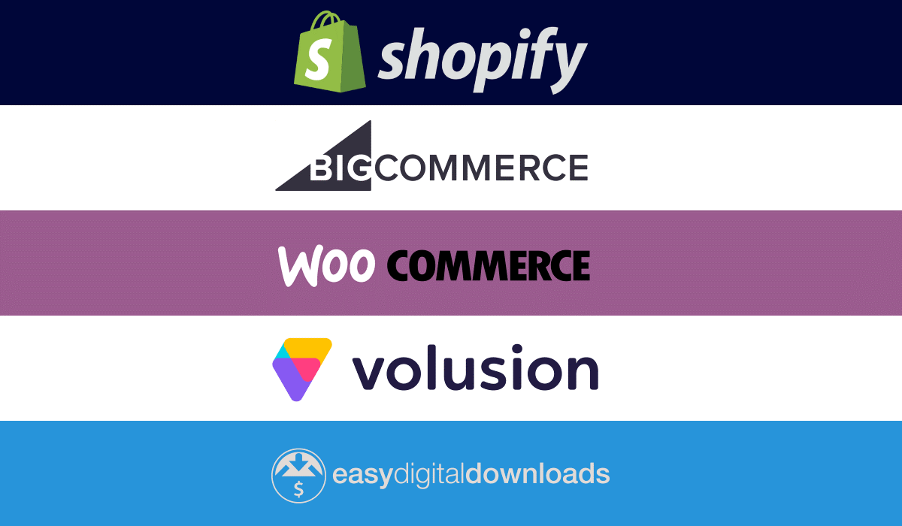

E-commerce de software as service (saaS)
SaaS significa Software as a Service. El término se refiere a la entrega y licencia de software donde los usuarios finales acceden al software en línea. Los usuarios finales generalmente pagan una tarifa de suscripción regular para poder usar el software SaaS no es un concepto nuevo. Ha existido desde la década de 1960. En aquel entonces, las computadoras no solo eran grandes sino también caras. Muchas empresas no podían permitirse invertir en una computadora. Como tal nació el modelo SaaS. Al principio, involucraba varios terminales que tenían teclados y monitores sin CPU. Fueron conectados en red a una unidad central donde se almacenaron todos los datos. Debería ingresar datos a través del teclado del terminal y enviarlos a la unidad central que luego los envió al monitor apropiado. Con el tiempo, este sistema ha evolucionado de manera similar a las computadoras y la industria SaaS migró gradualmente a la nube. En este punto, podría estar pensando que SaaS es lo mismo que la computación en la nube. Y tienes razón ... algo. SaaS es un subconjunto de la computación en nube. La computación en la nube se refiere a una amplia gama de servicios donde se accede o maneja algunos aspectos del servicio en línea en lugar de hacerlo completamente en su propia computadora o servidores de la compañía. El software como servicio es una pieza de software a la que se accede a través de la nube. Cuando utiliza software como servicio, todos los datos asociados con ese software también se almacenan en la nube. Por ejemplo, si compras Microsoft Office como una compra única y luego usa las funciones de colaboración en línea para compartir los documentos, estás usando la computación en la nube. Pero si paga por Microsoft Office 365, está utilizando SaaS porque puede acceder al software en línea y también puede actualizar automáticamente la versión de escritorio a la última versión.